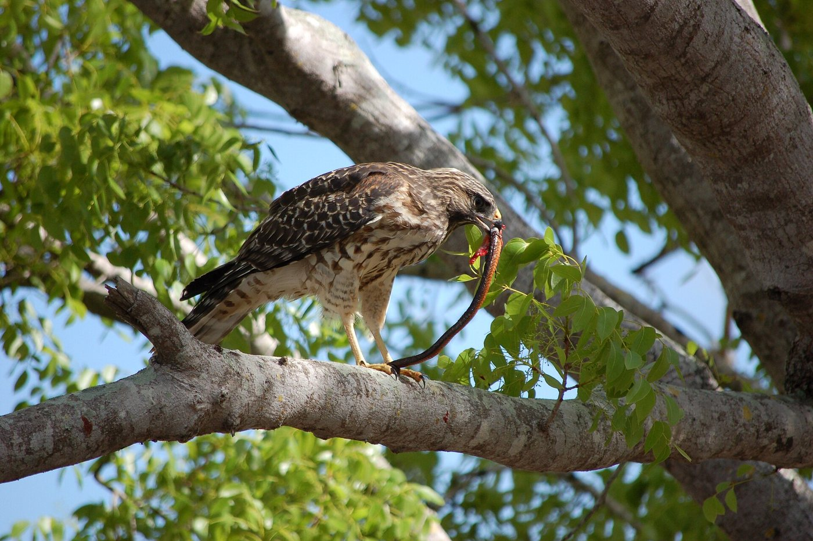

No frogs. Is the hawk in trouble?
After the dry spell, the green tree frogs left the marsh at post 7. The volunteer pinned this note to my case file:
In the lesson, you saw our hawk eat a snake. So it eats more than frogs! But what else is out here for it to eat? I need a field survey: a careful look at every living thing in one place.

Survey the Tranquil Forest
Nothing to build today. Your job is to look, like a real field scientist.
Tap the box next to each step when you finish it.
- 🖥️Before you put on your headset
- Step 1 · Know what to look forFind at least 5 living things: at least 1 plant and at least 3 animals. Try to remember where each one was and what it was doing.🌿Plantsproducers🐇Animals that eat plants🦎Small animals a hawk could catch💧Living things in or near the water
- 🥽In VR
- Step 2 · Go inPut on your headset and open the On-Demand app. Click the Explore tab and find Tranquil Forest. (Typing it in the Filter environments box finds it fast.) Click it, then click Begin Solo.
- Step 3 · Walk and lookUse your thumbstick to teleport (jump) to a new spot. At each spot, turn slowly in a full circle. Look up in the trees and sky, down at the ground, and into the water. Visit at least 3 spots.
- Step 4 · Think like the hawkFor every animal you see, ask: could a hawk catch this one? And for every plant: who eats this?
- Step 5 · BonusVR onlyStand still, close your eyes and listen for 30 seconds. What do you hear? You’ll write one sound in your field notes. Skip this step if you run out of time.
- Step 6 · LeavePress the top button on your right controller to open your menu. Click Leave in the top right corner and take off your headset. There’s nothing to capture today.
- ✅After
- Step 7 · Write it down fastFill in your field notes below right away, while you still remember what you saw.
🛟Having trouble in VR?Steps with pictures, and a how-to video
How-to video: Completing Assignments in Optima On-Demand (2 minutes)
These pictures come from a space map. Your map will be Tranquil Forest, but the buttons are the same. The video shows how to build and save; today you only need the first part and the end.
 1Explore tab
1Explore tabOn your dashboard, click the Explore tab. Scroll with the bar on the right, or type the map’s name in Filter environments.
 2Begin Solo
2Begin SoloClick the map, then click Begin Solo. You’ll have the marsh all to yourself.
 3Open your menu
3Open your menuPress the top button on your right controller. The menu tabs are Environments, Models, Assignments and Captures.
 4Leave
4LeaveOpen your menu and click Leave in the top right corner. Today you don’t need to capture or look for Submitted.
Red-Shoulder Feather badge earned!
Only VR field scientists earn this one. Now fill in your field notes below while the marsh is fresh in your mind.
Walk the boardwalk
- Click a post to stop there and look closely.
- Click Add to my field notes for at least 5 living things: at least 1 plant and at least 3 animals.
My field notes
Write at least 5 living things you saw. Tell where it was or what it was doing. Then tap Producer or Consumer, and tap whether the hawk could eat it.
Write a paragraph (4 or 5 sentences)
Was the volunteer right? Will the hawk starve without frogs? Use at least 2 living things from your field notes as evidence. Then tell one thing that could change in the marsh now that the frogs are gone.
- I think the volunteer is ___ because ___.
- In the forest I saw a ___, and a hawk could eat it.
- The hawk is part of a food web, so ___.
- Without frogs, there might be more ___ because ___.
- Your field notes have at least 5 living things, with every box filled in: at least 1 producer and at least 3 consumers.
- Your paragraph is at least 40 words and all 4 checks are lit.
How to turn it in: click the green button, choose Save as PDF, then upload that file to the Canvas assignment. (VR or photo walk, everyone turns in a PDF today.)